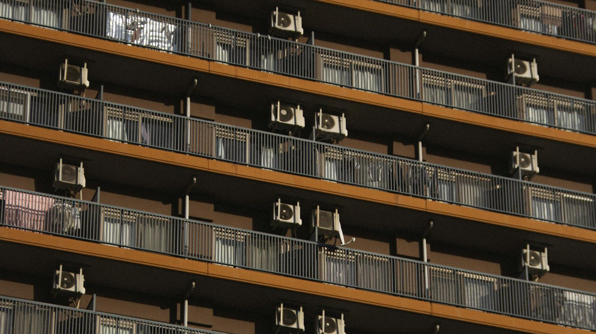
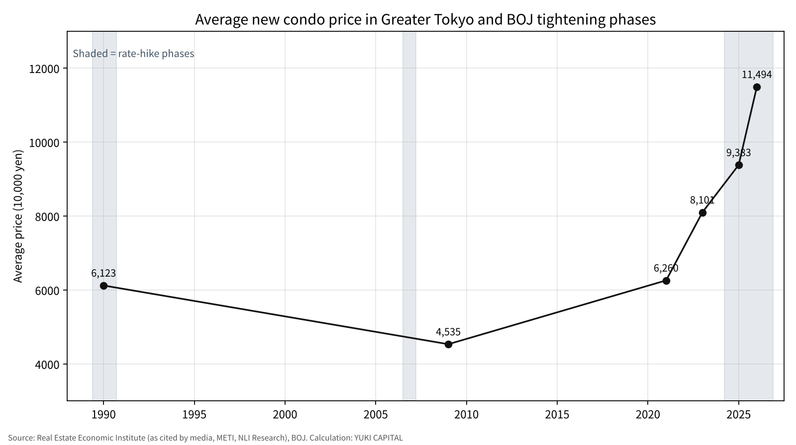
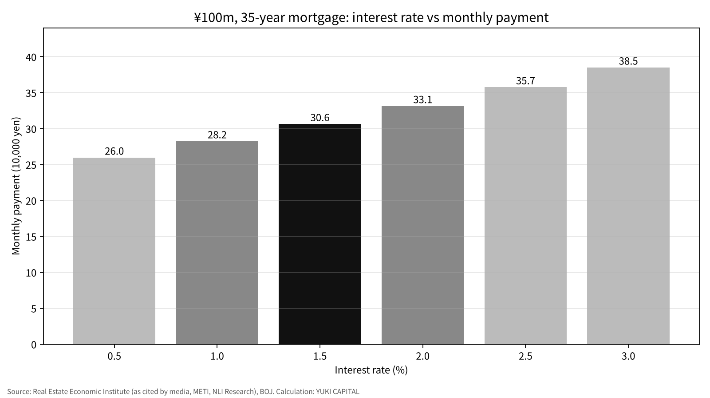

If the Bank of Japan raises rates to 1.5% in December, how will Tokyo condo prices move? Testing the 1990, 2006 and post-2024 hikes with data from the Real Estate Economic Institute and Japan's land ministry
At its December 17–18 policy meeting, the Bank of Japan will decide whether to raise its policy rate from 1.25% to 1.5%. Most market participants expect a hike.
Meanwhile, the average price of a new condo in Tokyo's 23 wards hit a record ¥137.84 million in fiscal 2025. In October 2026 it fell 15.5% year on year to ¥129.37 million, the first decline in four months.
The question of this article: in Japan's past tightening cycles, how much did Greater Tokyo condo prices move, and with what lag? And how much would a hike to 1.5% change a buyer's monthly mortgage payment?

- Of the three past tightening phases, prices fell sharply only once, in 1990. The official discount rate rose 3.5 points, from 2.5% to 6.0%, and the authorities also capped bank lending to real estate.
- In the 2006–2007 hikes to 0.5% and the post-2024 hikes to 1.25%, new condo prices in Greater Tokyo did not fall; they rose. The increases were small, and construction costs and demand for central Tokyo appear to have supported prices.
- On the payment side, for a ¥100 million, 35-year loan, a rise from 1.0% to 1.5% lifts the monthly payment from about ¥282,000 to about ¥306,000, roughly 8.5% more. The amount you can borrow for a ¥300,000 monthly payment falls from about ¥106.28 million to about ¥97.98 million.
Question and background
By "policy rate" I mean the short-term rate the BOJ steers. Until the 1990s that was the official discount rate; today it is the target for the uncollateralized overnight call rate. Variable mortgage rates in Japan tend to follow this short-term rate.
The BOJ ended negative rates in March 2024 and then raised its rate to 0.75% in December 2025, 1.0% in June 2026 and 1.25% in September 2026. At its October meeting it held at 1.25%, but judged underlying inflation to be "broadly consistent" with its 2% target.
As of November 20, one tally showed markets pricing in about an 84.7% chance of a 0.25-point hike in December. Board members disagree on where the neutral rate, which neither heats nor cools the economy, lies between 1.1% and 2.5%. Whether hikes stop at 1.5% or continue to 2% will shape where mortgage rates go.
I use two price measures. One is the Real Estate Economic Institute's average price of new condos in Greater Tokyo, a series that began in 1973. The other is the land ministry's real estate price index (2010 average = 100), which tracks transaction prices of condos, including existing ones.
Data and method
New condo prices come from the Real Estate Economic Institute's published figures and from documents by Japan's Ministry of Economy, Trade and Industry and NLI Research Institute that cite them. The average was ¥61.23 million in 1990, ¥45.35 million in 2009, ¥62.60 million in 2021 and ¥81.01 million in 2023.
I checked the tightening phases against the Cabinet Office's economic white papers, the Ministry of Finance's fiscal history and BOJ documents. Between May 1989 and August 1990 the official discount rate rose from 2.5% to 6.0%. Cuts began in July 1991.
For the sensitivity analysis, I used the standard level-payment formula to calculate the monthly payment on a ¥100 million loan over 35 years (420 payments) at six rates from 0.5% to 3.0%. I also worked backward to find how much can be borrowed for a ¥300,000 monthly payment.
Results
| Phase | Policy rate | Greater Tokyo new condo price | What followed |
|---|---|---|---|
| 1989–1990 | Discount rate 2.5%→6.0% (+3.5pt) | ¥61.23 million in 1990 (then a record) | Jan 1992 land prices down 4.6% y/y; 23-ward new condos fell to ¥40.03 million by 2002 |
| 2006–2007 | 0%→0.5% (+0.5pt) | Rising; ¥45.35 million in 2009 | Fell after the Lehman shock, hard to separate from the hikes |
| 2024–2026 | -0.1%→1.25% (+1.35pt) | ¥81.01 million in 2023 → ¥114.94 million in H1 FY2026 | 23 wards down 15.5% y/y in Oct 2026 |

In the 1990 phase, the fall in land prices became clear about two years after the hikes began. Official land prices in January 1992 fell 4.6% year on year, the first decline since 1975. Stocks fell about 60% from their end-1989 peak of 38,915.
In the post-2024 phase, Greater Tokyo new condo prices crossed ¥100 million while the policy rate rose 1.35 points. The land ministry's condo price index reached 225.1 in December 2025, 2.25 times its 2010 level.
The 2006–2007 hikes were small, at 0.5 points. What changed the price trend was the global financial turmoil after the 2008 Lehman shock. It is hard to isolate the effect of the hikes alone from that phase.
Weight measured by income and payments
Price levels look different when viewed through income and payments. NLI Research estimates that the price-to-income ratio for new Greater Tokyo condos was 10.53 in 2021, above the 9.34 of 1990.
The same institute estimates, however, that loan payments in 2023 were only about 80% of bubble-era levels. Mortgage rates in 1990 were far higher, so monthly payments were heavier even though prices were lower.
In other words, today's high prices rest heavily on low rates. When rates rise, payments get heavier even at the same price, and fewer people can buy. The path from rate hikes to prices runs through this payment burden.
Sensitivity analysis
| Rate | Monthly payment (¥100m, 35 yrs) | Total repaid | Max loan at ¥300,000/month |
|---|---|---|---|
| 0.5% | about ¥260,000 | about ¥109.03m | about ¥115.57m |
| 1.0% | about ¥282,000 | about ¥118.56m | about ¥106.28m |
| 1.5% | about ¥306,000 | about ¥128.60m | about ¥97.98m |
| 2.0% | about ¥331,000 | about ¥139.13m | about ¥90.56m |
| 2.5% | about ¥357,000 | about ¥150.15m | about ¥83.92m |
| 3.0% | about ¥385,000 | about ¥161.64m | about ¥77.95m |

Each 0.5-point rise cuts the amount you can borrow for the same payment by about 7–8%. A hike from 1.0% to 1.5% reduces the borrowing ceiling by about ¥8.3 million. For variable-rate borrowers, the gap shows up in payments over several years. At 2.0%, the monthly payment on ¥100 million over 35 years becomes about ¥331,000, about ¥49,000 heavier than at 1.0%. The gap in total repayment widens to about ¥20.57 million.
Borrowers are not the only ones who set prices, though. Expensive central Tokyo properties are said to have a high share of cash buyers and overseas investors, for whom mortgage rates matter less. The effect of rates may appear first in the suburbs and in existing homes, where more buyers borrow.
Discussion
One opposing view holds that rate hikes are a sign of a strong economy and rising wages, so prices are supported. Indeed, prices kept rising through the post-2024 hikes. Construction costs and labor shortages have also cut supply of new condos and pushed prices up.
Another opposing view is that as long as the yen stays weak, Tokyo property looks cheap from abroad and buying continues. The dollar is around ¥158, so ¥100 million in Tokyo is about $630,000 to a dollar buyer. If Japanese hikes push the yen higher, that sense of cheapness fades.
There are three limitations. First, average new condo prices swing with the location and size of what was sold that month; the 15.5% drop in October 2026 was mainly because no expensive central Tokyo projects came out. Second, the three past phases differed; 1990 coincided with strong lending caps. Third, even within the BOJ, views differ on how far rates will rise after 1.5%.
The test to watch is whether the land ministry's condo price index turns negative year on year. An index that includes existing homes is less affected by the mix of properties than the new-condo average.
Conclusion
In Japan's past, rate hikes sharply cut housing prices only in 1990, when a sudden 3.5-point tightening coincided with caps on lending. A 0.25-point move from 1.25% to 1.5% is far smaller.
Still, payments for buyers who borrow will certainly get heavier. On ¥100 million over 35 years, the difference is about ¥24,000 a month and about ¥10 million in total. Before asking whether prices will fall, I want to see in numbers that the home you can buy for the same payment gets smaller. I think it is best to check prices with the land ministry index and payments with the numbers in your own household budget.
How I see it
I live in Japan, and I expect the BOJ to hike in December. I think this year proved that the yen weakens as long as the US–Japan rate gap does not narrow.
I myself sold one of the properties I inherited, paid off all the debt and moved the capital into bank stocks. I have no borrowings now, so rate hikes do not add to my burden. For people buying a home, I think it is fine to wait until prices fall, save money or invest elsewhere, rather than rushing to buy now with a long variable-rate loan.
Sources
- Real Estate Economic Institute, Greater Tokyo new condo market (Kyodo, Nov 19, 2026) https://kumanichi.com/articles/2059658
- Real Estate Economic Institute, H1 FY2026 Greater Tokyo new condos (Kyodo, Oct 20, 2026) https://www.kanaloco.jp/news/economy/article-1313865.html
- Ministry of Economy, Trade and Industry, "Rising prices of new condominiums" (Dec 12, 2024) https://www.meti.go.jp/statistics/toppage/report/minikaisetsu/hitokoto_kako/20241212hitokoto.html
- NLI Research Institute, "Greater Tokyo new condo prices 30% above the bubble era" (Jan 31, 2024) https://www.nli-research.co.jp/files/topics/77402_ext_18_0.pdf?site=nli
- Cabinet Office, Economic White Paper FY1991, Finance https://www5.cao.go.jp/keizai3/keizaiwp/wp-je91/wp-je91-s0024.html
- Cabinet Office, Economic White Paper FY1992, Effects of falling asset prices https://www5.cao.go.jp/keizai3/keizaiwp/wp-je92/wp-je92-00106.html
- Ministry of Finance, Policy Research Institute, Fiscal History of the Heisei Era https://www.mof.go.jp/pri/publication/policy_history/series/h1-12/6_1_1.pdf
- Ministry of Land, Infrastructure, Transport and Tourism, Real Estate Price Index (Dec 2025) (Mar 31, 2026) https://www.mlit.go.jp/report/press/tochi_fudousan_kensetsugyo05_hh_000001_00256.html
- Bank of Japan, Governor Ueda, statement to the House of Councillors (Nov 19, 2026) https://www.boj.or.jp/mopo/diet/d_state/data/dst261119a.pdf
- Kyodo, "Next hike 'when possible'" (Nov 10, 2026) https://kumanichi.com/articles/2056048
Charts by YUKI CAPITAL. Photo: Joshua Griffiths (Unsplash)
I record my daily numbers and decisions on X.